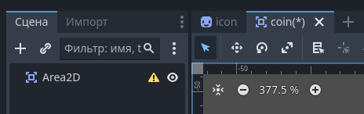
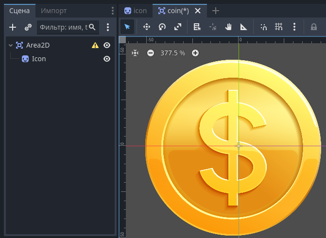
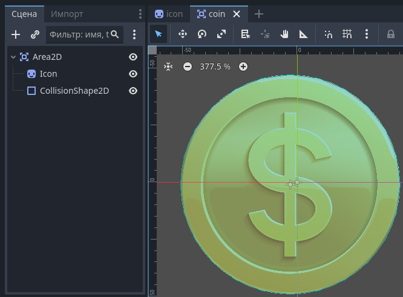
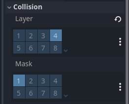
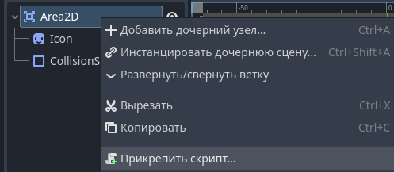

Как работать с Area2D в Godot: полное руководство для 2D-игр
Одним из самых мощных и часто используемых узлов в Godot является Area2D. Этот простой на первый взгляд узел открывает огромные возможности для создания множества возможностей в ваших 2D-играх. В этой статье мы разберем всё, что нужно знать о Area2D: от базовых принципов работы до продвинутых техник.
Area2D — это "невидимая" область, которая может реагировать на "касание" с другими объектами в игре.
Что такое Area2D и зачем он нужен?
Area2D — это узел, который создаёт область в вашей игре, способную обнаруживать другие объекты. В отличие от StaticBody2D или KinematicBody2D, Area2D не имеет физического тела и не участвует в физическом моделировании столкновений. Вместо этого она используется для:
- Триггеров — активация событий при пересечении определенной зоны
- Эффектов — нанесение урона, лечение, замедление
- Детекции приближения — обнаружения игрока врагами
- Сбора предметов — монетки, аптечки, бонусы
Схема работы Area2D
Area2D работает по принципу "вход-выход": когда объект входит в зону или выходит из Area, то срабатывают сигналы.
Основные компоненты Area2D
Чтобы Area2D работала правильно, ей нужны два основных компонента:
CollisionShape2D или CollisionPolygon2D
Определяет форму и размер зоны обнаружения. Без этого компонента Area2D не будет работать!
Вы можете выбрать различные формы: круг, прямоугольник, капсулу или произвольный полигон.
Collision Layers и Masks
Настройки слоёв столкновений определяют, с какими объектами будет взаимодействовать ваша Area2D. Это важная настройка для оптимизации и правильной работы игры. Но необязательная!
Настройка Collision Layers
В Godot есть 32 слоя столкновений. Вы можете настроить их в Project Settings → Layer Names → 2D Physics. Вот типичная конфигурация:
| Слой | Название | Объекты |
|---|---|---|
| 1 | Игрок | Главный персонаж |
| 2 | Враги | Противники, боссы |
| 3 | Стены | Непроходимые препятствия |
| 4 | Предметы | Монетки, бонусы, оружие |
| 5 | Зоны | Area2D для обнаружения |
Сигналы Area2D: основа взаимодействия
Area2D предоставляет несколько сигналов для работы с обнаружением объектов. Вот основные из них:
# Когда тело (физический объект) входит в зону
signal body_entered(body)
# Когда тело выходит из зоны
signal body_exited(body)
# Когда другая Area2D входит в зону
signal area_entered(area)
# Когда другая Area2D выходит из зоны
signal area_exited(area)Важное различие
body_entered/exited работают с физическими телами (StaticBody2D, KinematicBody2D, RigidBody2D).
area_entered/exited работают только с другими Area2D.
Не путайте эти сигналы!
Практические примеры использования
Пример 1: Сбор монеток
Самый классический пример использования Area2D — сбор предметов: давайте создадим монетку, которую игрок может собрать.
Создайте сцену монетки
- Создайте новую сцену с Area2D в качестве корневого узла.
 - Добавьте Sprite для отображения монетки.
 - И CollisionShape2D (круглая форма).

Настройте слои столкновений
В Area2D установите Mask на слой "Игрок" (слой 1). Убедитесь, что сам Area2D находится на слое "Предметы" (слой 4).

Добавьте скрипт
Прикрепите скрипт к Area2D и реализуйте логику сбора.

extends Area2D
func _ready():
# Подключаем сигнал автоматически
connect("body_entered", self, "_on_body_entered")
func _on_body_entered(body):
# Проверяем, что это игрок
if body.is_in_group("player"):
#Уничтожаем монетку при касания
queue_free()Пример 2: Зона урона (лава, шипы)
Создадим опасную зону, которая наносит урон игроку при входе в неё.
Зона урона обычно наносит урон либо мгновенно при входе, либо постоянно, пока игрок находится в зоне. Реализуем второй вариант.
extends Area2D
# Урон в секунду
@export var damage_per_second = 10
# Интервал нанесения урона
@export var damage_interval = 0.5
# Таймер для периодического урона
var damage_timer = 0.0
# Переменная для хранения игрока, который находится в зоне
var player = null
func _ready():
# Подключаем сигналы
connect("body_entered", self, "_on_body_entered")
connect("body_exited", self, "_on_body_exited")
func _process(delta):
#Обновляем таймер
damage_timer += delta
# Наносим урон каждые damage_interval секунд
if damage_timer >= damage_interval:
damage_timer = 0.0
if player != null:
# Наносим урон
player.health -= damage_per_second * damage_interval
func _on_body_entered(body):
if body.is_in_group("player"):
player = body
print("Игрок вошёл в опасную зону!")
func _on_body_exited(body):
if body.is_in_group("player"):
player = null
print("Игрок вышел из опасной зоны.")Пример 3: Детектор приближения для врага
Создадим зону обнаружения, которая позволит врагу "замечать" игрока и начинать преследование.
extends Area2D
# Игрок в зоне обнаружения
var detected_player = null
# Радиус обнаружения
@export var detection_radius = 200
func _ready():
# Настраиваем размер зоны
$CollisionShape2D.shape.radius = detection_radius
# Подключаем сигналы
connect("body_entered", self, "_on_body_entered")
connect("body_exited", self, "_on_body_exited")
func _on_body_entered(body):
if body.is_in_group("player") and detected_player == null:
detected_player = body
print("Игрок обнаружен!")
func _on_body_exited(body):
if body == detected_player:
detected_player = null
print("Игрок потерян.")
# Проверка видимости
func _physics_process(delta):
var distance_to_enemy = (global_position - player.global_position).length()
if distance_to_enemy <= detection_radius:
#дальше действия, что делать, когда найдётся игрок
Оптимизация работы с Area2D
Советы по оптимизации
При работе с большим количеством Area2D важно оптимизировать их для сохранения производительности игры.
| Проблема | Решение | Эффект |
|---|---|---|
| Слишком много Area2D | Объединяйте маленькие зоны в одну большую | -50% проверок столкновений |
| Сложные формы CollisionShape | Используйте простые формы (круги, прямоугольники) | +30% производительности |
| Лишние проверки | Точно настраивайте Collision Layers/Masks | -70% ненужных проверок |
| Постоянные проверки | Отключайте Area2D когда они не нужны | +40% FPS |
Код для динамического включения/отключения Area2D
extends Area2D
# Дистанция активации
@export var activation_distance = 500
# Ссылка на игрока
var player = null
# Таймер для проверки расстояния
var check_timer = 0.0
var check_interval = 0.5
func _ready():
# Находим игрока
player = get_tree().get_nodes_in_group("player")[0]
# Изначально отключаем Area2D если далеко
if player:
var distance = global_position.distance_to(player.global_position)
monitorable = distance <= activation_distance
monitoring = distance <= activation_distance
func _process(delta):
check_timer += delta
if check_timer >= check_interval and player:
check_timer = 0.0
var distance = global_position.distance_to(player.global_position)
var should_be_active = distance <= activation_distance
# Включаем/выключаем только при изменении состояния
if should_be_active != monitoring:
monitorable = should_be_active
monitoring = should_be_active
if should_be_active:
print("Area2D активирована")
else:
print("Area2D деактивирована")Распространённые ошибки и их решение
Ошибка 1: Сигналы не срабатывают
Причина: CollisionShape2D не назначен или отключен.
Решение: Убедитесь, что у Area2D есть CollisionShape2D или CollisionPolygon2D, и они включены (disabled = false).
Ошибка 2: Неправильные слои столкновений
Причина: Area2D и целевой объект находятся на разных слоях.
Решение: Проверьте Collision Layer объекта и Collision Mask Area2D - они должны пересекаться.
Ошибка 3: Множественные срабатывания
Причина: Объект быстро входит и выходит из зоны.
Решение: Используйте таймер задержки или флаг "обработан".
Внезапный лайфхак
Чтобы писать более понятный код, используйте несколько Area2D с разными назначениями на одном объекте:
# На одном враге могут быть:
# - Area2D для обнаружения игрока (большой радиус)
# - Area2D для атаки (маленький радиус)
# - Area2D для получения урона (точный размер спрайта)
# В скрипте врага:
func _ready():
$DetectionArea.connect("body_entered", self, "_on_player_detected")
$AttackArea.connect("body_entered", self, "_on_player_in_attack_range")
$HitArea.connect("area_entered", self, "_on_hit_by_bullet")Заключение
Area2D — невероятно мощный инструмент разработчика игр на Godot. От простого сбора предметов до сложных систем обнаружения и взаимодействия — Area2D может всё. Ключ к мастерству — понимание принципов работы и практика.
Начните с простых примеров из этой статьи, экспериментируйте с настройками слоёв, создавайте собственные системы взаимодействия. Помните, что лучшая оптимизация — это правильная архитектура с самого начала.
Домашнее задание
Создайте простую игру-платформер с использованием трёх разных типов Area2D:
- Монетки для сбора
- Шипы, которые наносят урон
- Дверь, которая исчезает после касания ключа